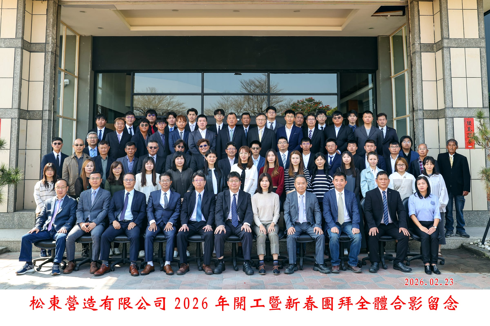
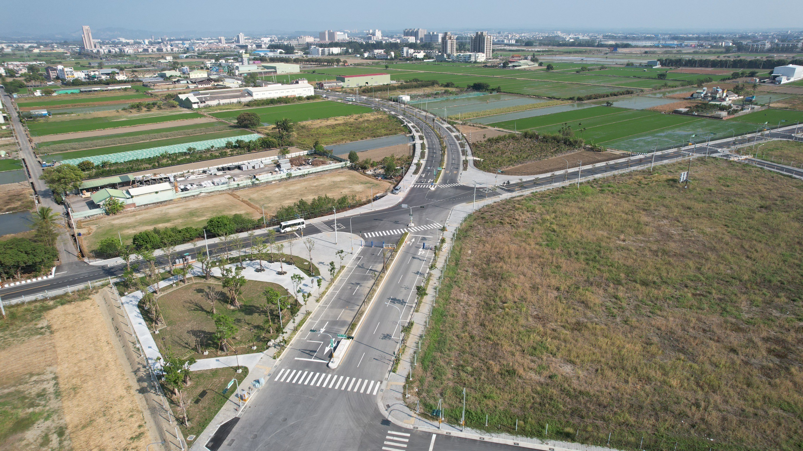
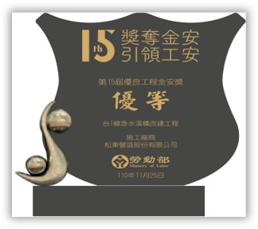
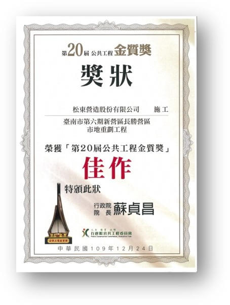
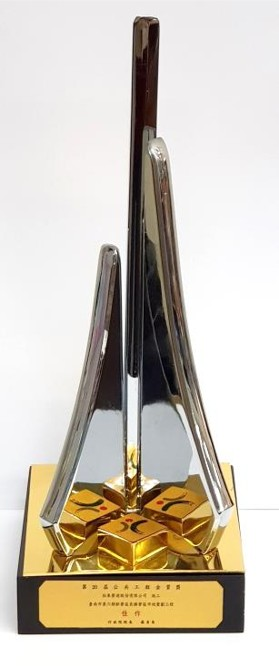
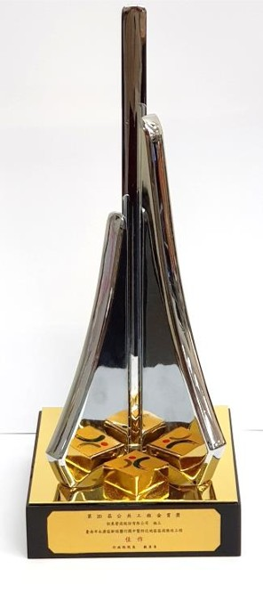
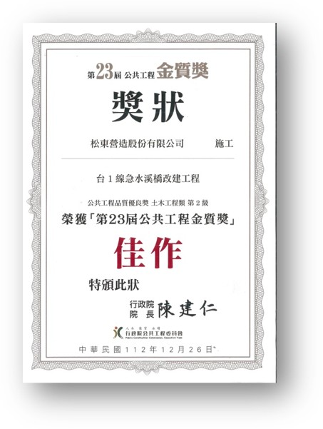
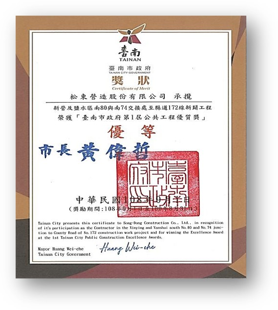
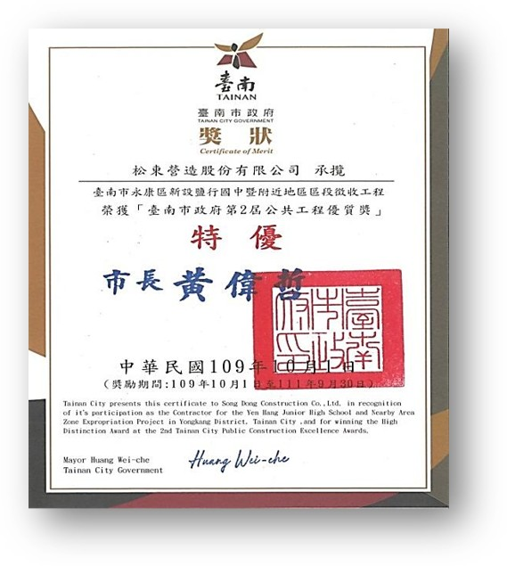
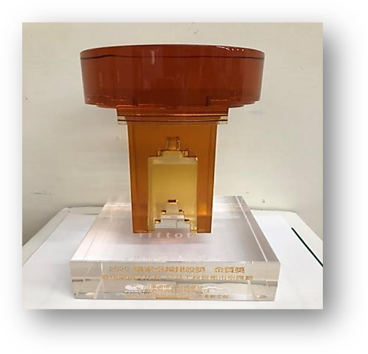

松東營造股份有限公司承包:
臺南市南科特定區開發區塊A、B、C、D、E、N、O區段徵收工程(第2標)
臺南市南科特定區開發區塊A、B、C、D、E、N、O區段徵收工程(第3標)

深耕台灣公共基礎建設與民生工程。松東營造以嚴謹的工序把關、厚實的施工管理，將每一項道路、橋梁與水利工程，構築為值得社會信賴的堅實基石。
營造是一項需要直面土地、經得起時間與自然考驗的實體志業。
從早期基層工程起步，松東營造秉持「踏實築底、嚴謹精進」的匠人精神，持續充實工程技術實力與現代化機具裝備。長年參與各級公路新建拓寬、橋梁改建加固、河川防汛護岸與水利改善工程。
我們深知公共工程關乎民生安全與區域發展，因此在每一處鋼筋綁紮、每一立方混凝土澆置、每一段瀝青鋪築的工序中，皆嚴格落實施工規範與自主品管，以務實行動為社會構築安心生活環境。
查閱公司最新公告，並透過申訴管道反映工作相關問題。
臺南市南科特定區開發區塊A、B、C、D、E、N、O區段徵收工程(第2標)
臺南市南科特定區開發區塊A、B、C、D、E、N、O區段徵收工程(第3標)
歡迎具備公共工程查核經驗、積極踏實之專業夥伴加入團隊，意者請至「聯絡我們」洽詢。
供公司員工、工班人員及協力廠商使用。表單目前仍標示為測試階段，請先使用模擬資料。
申訴專區（測試中）從獎金、年度出國假與補助，到生活、健康與學習支持，了解來松東上班享有的福利。
薪資採職等分級制度。
年終獎金保底1.5個月。
員工年資滿一年，每年一次享有出國假3天，並補助新臺幣30,000元。
適用條件：員工年資滿一年。提供頻率：一年一次。
返鄉津貼最高補助新臺幣4,000元。
提供供餐或住宿福利，支持日常工作生活。
提供員工健康檢查，關心同仁健康。
提供教育訓練補助，支持員工學習與專業成長。
整合土木工程技術與現場工務管理，從施工計畫到現場執行，落實道路、橋梁、水利與公共基礎設施建設。點選代表工程，可查閱完整介紹、工程影像及相關紀錄。

整合道路、排水及公共設施施工，從前期施工計畫、交通維持到現場工務管理，兼顧工區作業效率與民眾通行安全。

承辦橋梁與土木結構施工，重視基礎、結構組裝及各階段作業安全。以斜張橋式渡槽串聯灌溉系統，呈現結構工程與水利設施的整合。

投入排水、滯洪與抽水設施建設，整合土木結構及現場施工管理，掌握汛期前施工安排，提升區域防洪與排水效能。
每一座獎座與獎狀，皆凝聚了現場施工團隊的專業與堅持。松東營造以扎實嚴謹的工序，屢獲國家級公共工程金質獎、金安獎與國際卓越建設獎最高肯定。
















營造工程不是單純的買賣，而是對社會大眾行車平安、居住安全的永續保證。松東營造秉持三大核心原則，穩步向前。
嚴守工程合約規範，不偷工、不減料、不推諉。與發包單位、工程顧問與協力廠商建立彼此信賴的長久夥伴關係，實事求是履行每一項工程承諾。
從鋼筋原料檢驗、混凝土拌合比抽驗到現場各單元查驗，落實「自主檢查、監造複驗」的三級品管標準。追求結構強度與施工細節的極致穩定。
堅持「人命至上、工安無價」。每日作業前工具箱會議、個人防護裝備確實查核、工區周遭交通維持管制，全力實現零職災、零事故之工區標準。